Looopでんき顧客管理システム
操作マニュアル
催事現場での新規登録から、Looop申込ステータスの更新、顧客フォロー、太陽光連携CSV出力までを、ユーザー操作の流れに沿ってまとめたマニュアルです。
1. まず覚える全体の流れ
基本は「登録する」「確認する」「更新する」「必要に応じて出力する」の順番です。迷ったときは、左側メニューから目的の画面へ移動してください。
2. 催事フォームで新規登録する
左メニューの「催事フォーム」を開きます。スマホ・タブレットでの入力を想定した5ステップ形式です。各ステップで必要事項を入力し、「次へ」で進みます。
2-1. 基本情報を入力する
お客様名と電話番号は必須です。電話番号は半角数字で入力します。電話番号が既に登録されている場合は警告が表示されるため、重複登録に注意してください。
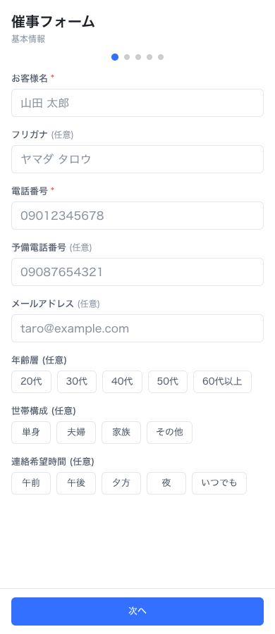
2-2. 住所と地図ピンを確認する
郵便番号、都道府県、市区町村、番地、建物名を入力します。住所入力後に「地図で確認」を押し、お客様にピン位置を確認してもらいます。位置が違う場合はピンを修正し、最後に「ピン位置を確定」を押します。
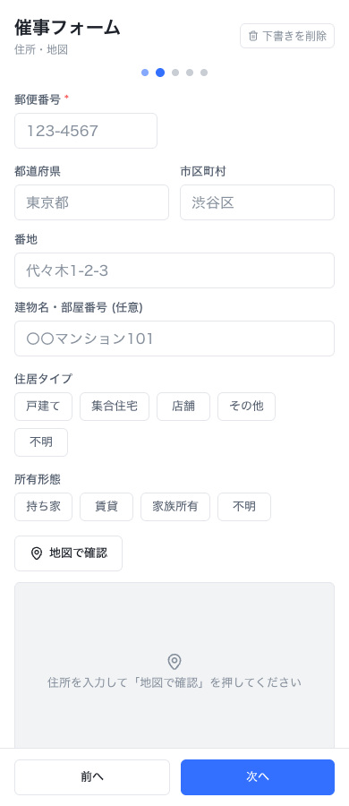
2-3. Looopでんき情報を入力する
現在の電力会社、月間電気料金、Looop申込ステータス、催事会場を入力します。催事会場は必須です。
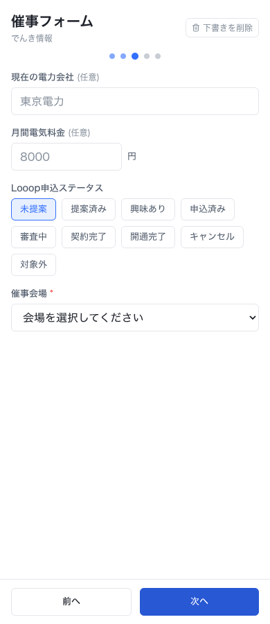
2-4. クロスセル興味商材を登録する
光回線、ウォーターサーバー、携帯電話、太陽光、蓄電池など、後追い提案につながる興味商材があればチェックします。見込み度はA・B・Cから選びます。
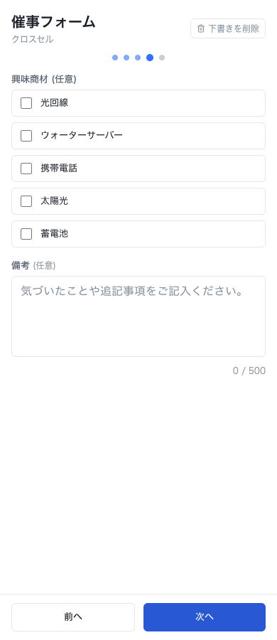
2-5. 同意を確認して登録する
個人情報の取得・利用同意は必須です。太陽光会社へ顧客情報を連携する可能性がある場合は、太陽光パートナー提供同意も取得します。内容を確認し、必要なチェックを入れて「登録する」を押します。
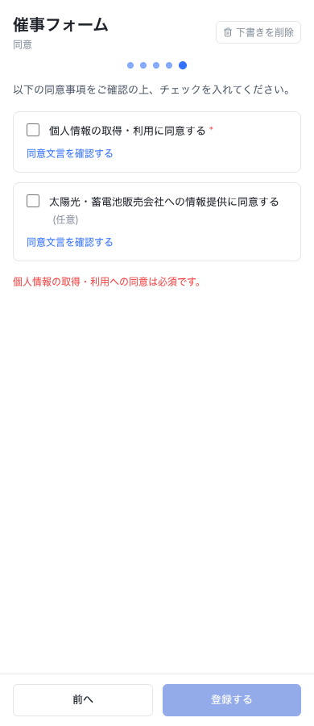
3. 顧客一覧で探す・絞り込む
左メニューの「顧客」を開くと、登録済みの顧客が一覧で表示されます。顧客名、電話番号末尾、催事日、会場、担当者、Looopステータス、同意、ピン確認状態を確認できます。
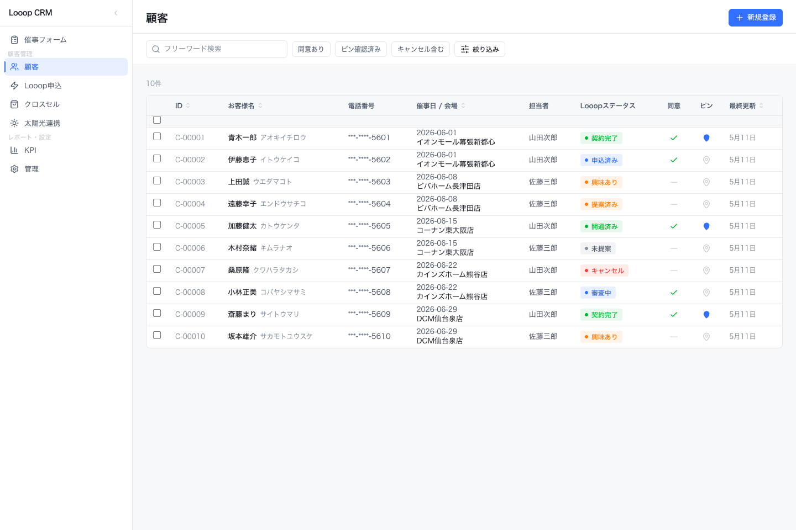
3-1. フリーワード検索
画面上部の検索欄にお客様名やフリガナを入力すると、該当する顧客に絞り込まれます。
3-2. よく使う条件で絞り込む
「同意あり」「ピン確認済み」「キャンセル含む」はワンクリックで切り替えできます。条件が有効なときはボタンの色が変わります。
3-3. 会場・担当者・Looopステータスで絞り込む
「絞り込み」を押すと、詳細条件のパネルが開きます。会場、担当者、Looopステータスを指定して「適用」を押します。
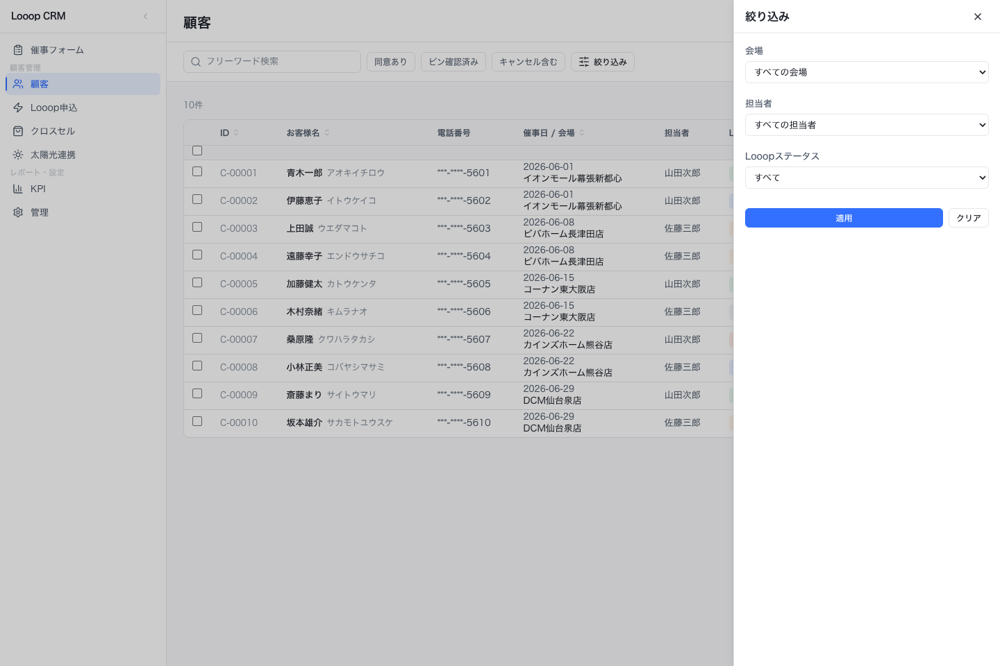
4. 顧客詳細で確認する
顧客一覧で対象行をクリックすると、顧客詳細が開きます。上部タブで「基本情報」「住所・地図」「Looop」「クロスセル」「太陽光連携」「同意履歴」「対応履歴」などを切り替えます。
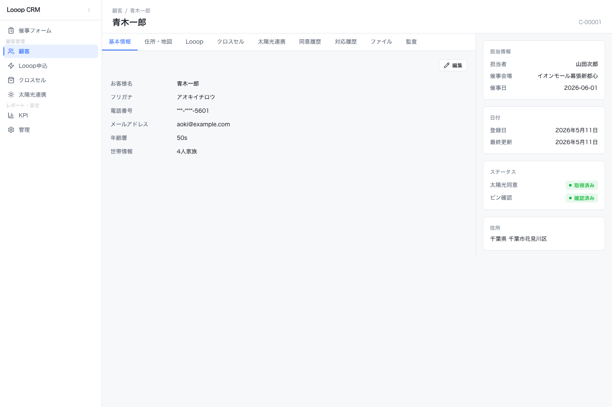
4-1. Looopタブを確認する
「Looop」タブでは、その顧客のLooopでんき申込情報を確認できます。申込ステータス、申込日、契約日、開通日、売上計上月、支払いステータスを確認します。
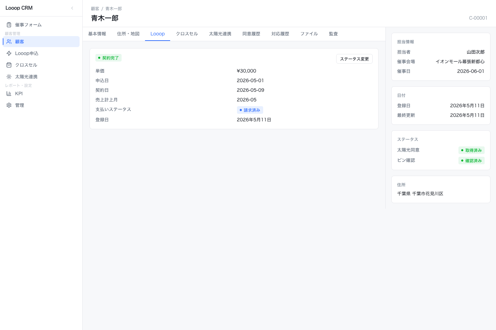
4-2. 個別顧客のステータスを変更する
Looopタブの「ステータス変更」を押し、新しいステータスと変更理由を入力して保存します。変更理由は後から対応履歴を確認するときの重要な記録になります。
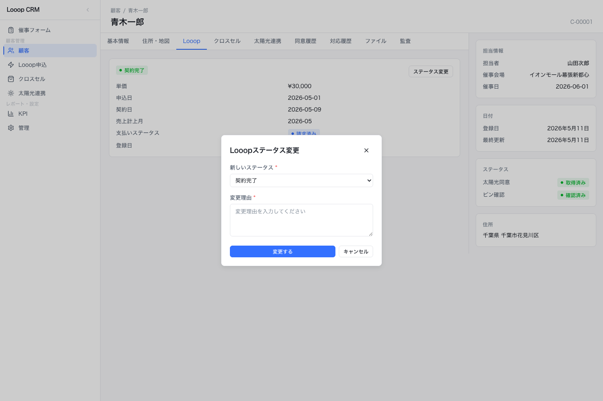
5. Looop申込を管理する
左メニューの「Looop申込」を開くと、Looopでんきの申込状況を一覧で確認できます。今月の申込数、今月の開通数、今月の売上も画面上部で確認できます。
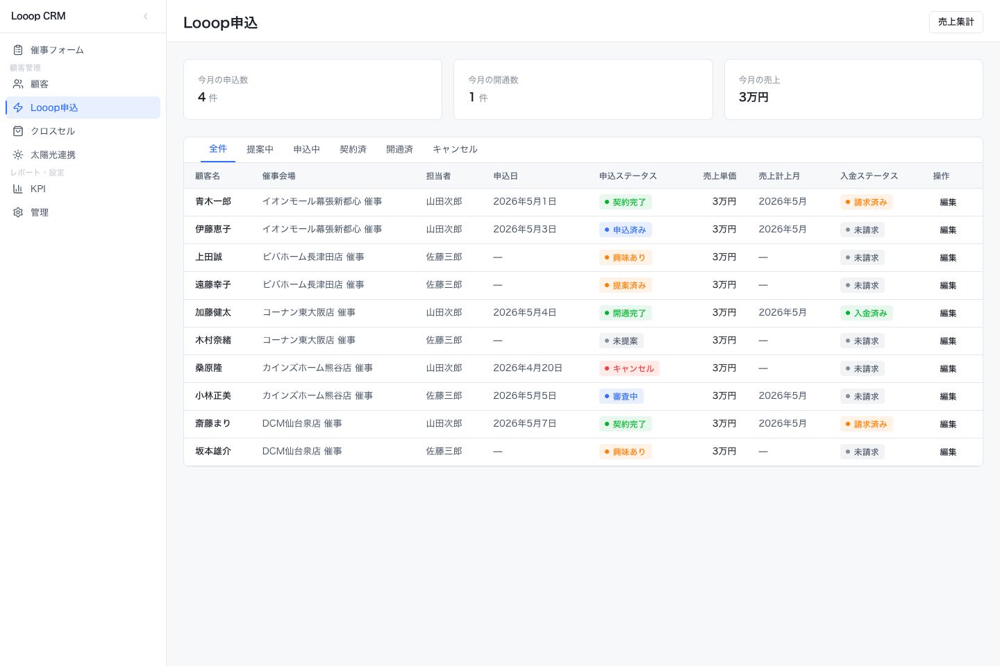
5-1. ステータスタブで対象を切り替える
「全件」「提案中」「申込中」「契約済」「開通済」「キャンセル」を切り替えると、対象ステータスの申込だけを確認できます。
5-2. 一覧からステータスを変更する
対象行の「編集」を押すと、右側にステータス変更パネルが開きます。新しい申込ステータスを選択し、「保存」を押します。キャンセルに変更する場合はキャンセル理由を入力します。
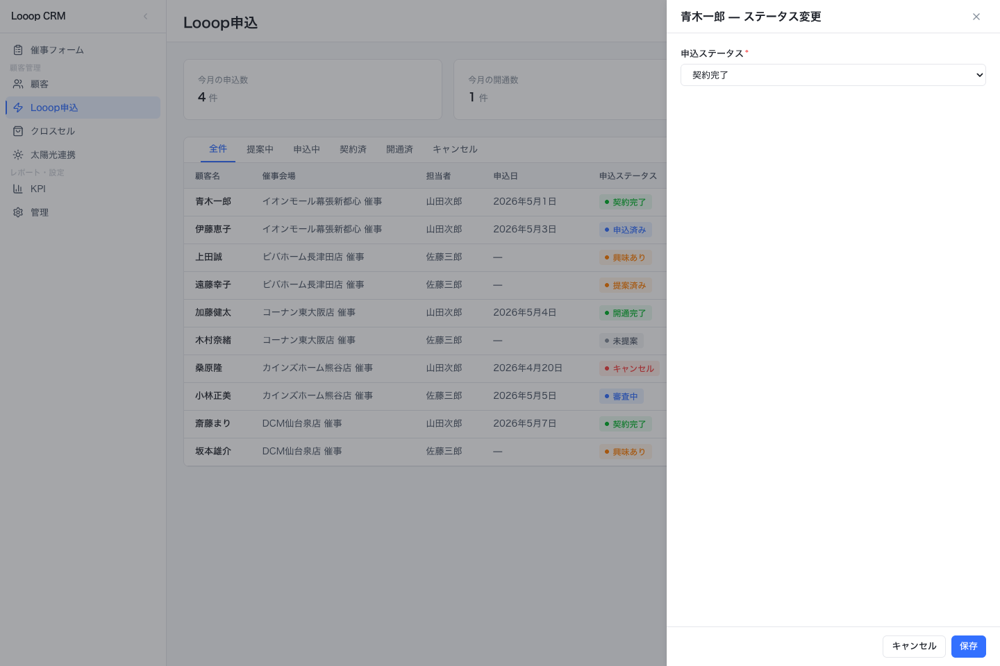
5-3. ステータスの意味
| ステータス | 使うタイミング |
|---|---|
| 未提案 | まだLooopでんきを提案していない状態です。 |
| 提案済み | 提案は完了したが、お客様の反応待ちの状態です。 |
| 興味あり | お客様が前向きに検討している状態です。 |
| 申込済み | 申込手続きが完了した状態です。 |
| 審査中 | 申込後、審査や確認が進んでいる状態です。 |
| 契約完了 | 契約が完了し、開通待ちの状態です。 |
| 開通完了 | 電力の切り替え・開通が完了した状態です。 |
| キャンセル | 申込または契約がキャンセルになった状態です。理由を残します。 |
| 対象外 | 提案対象外、または申込できない顧客です。 |
6. 太陽光連携CSVを出力する
左メニューの「太陽光連携」を開くと、太陽光会社へ連携できる顧客が表示されます。対象になるのは、原則として太陽光パートナー提供同意があり、住所のピン確認が済んでいる顧客です。
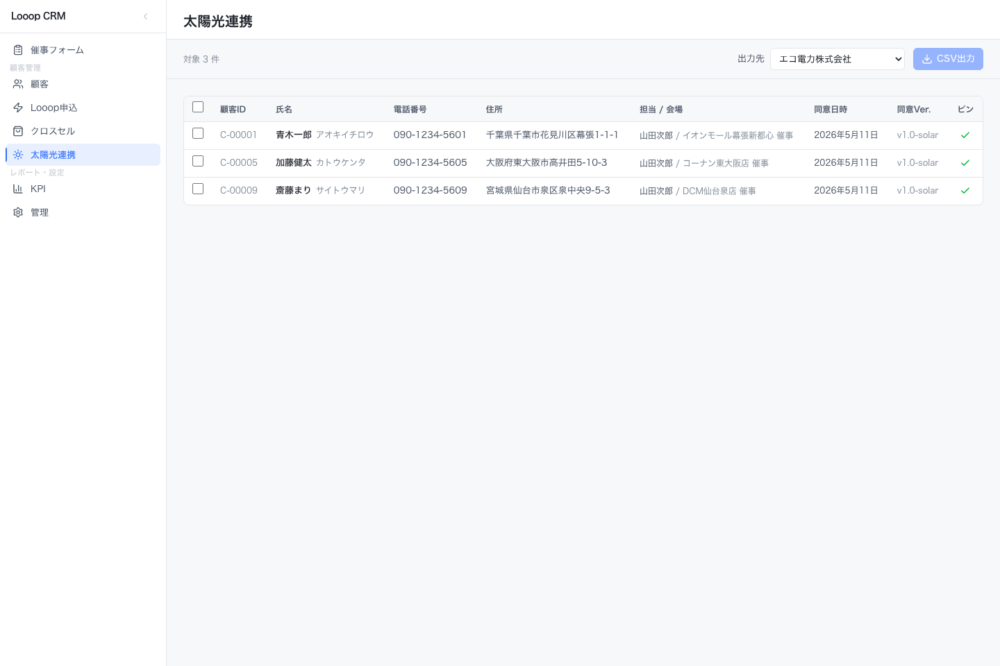
6-1. CSV出力の手順
- 連携する顧客にチェックを入れます。
- 右上の「出力先」で連携先会社を選びます。
- 「CSV出力」を押します。
- 確認画面で出力件数、出力先会社、同意バージョンを確認します。
- 問題なければ「出力する」を押します。
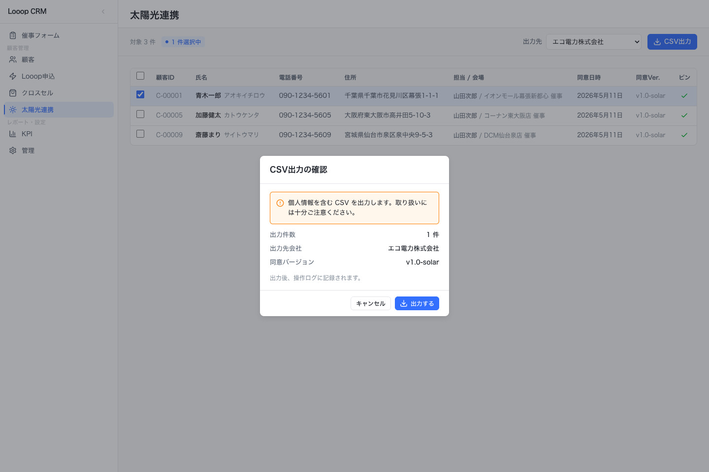
7. 運用ルール・注意点
7-1. 登録時の注意
- 電話番号は重複確認に使うため、聞き間違い・入力間違いがないか確認します。
- 住所は番地・建物名まで入力し、太陽光連携の可能性がある場合は必ずピン位置を確認します。
- 同意項目はお客様に内容を説明してからチェックします。
- 入力途中のデータは下書き保存されるため、端末を共用する場合は不要な下書きを削除します。
7-2. ステータス更新時の注意
- 申込状況が変わったら、できるだけ当日中にLooopステータスを更新します。
- キャンセル時は、理由を具体的に残します。
- 契約完了・開通完了にした顧客は、売上計上月と入金ステータスもあわせて確認します。
7-3. CSV出力時の注意
- 太陽光連携の対象条件は「同意取得済み」「ピン確認済み」です。
- 出力前に、出力先会社と件数が正しいか確認します。
- 出力したCSVは個人情報として扱い、不要になったファイルは社内ルールに従って削除します。
7-4. 困ったとき
| 状況 | 確認すること |
|---|---|
| 顧客が見つからない | 検索文字、絞り込み条件、キャンセル含む設定を確認します。 |
| 太陽光連携に表示されない | 太陽光同意が取得済みか、住所のピン確認が済んでいるか確認します。 |
| 登録ボタンが押せない | 必須項目と個人情報同意にチェックが入っているか確認します。 |
| ステータス変更が保存できない | 必須の変更理由またはキャンセル理由が入力されているか確認します。 |
このマニュアルのスクリーンショットはマニュアル作成用のサンプルデータを使用しています。